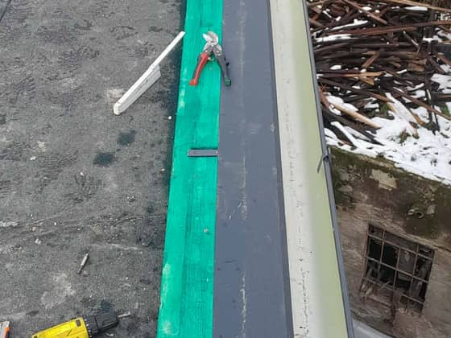
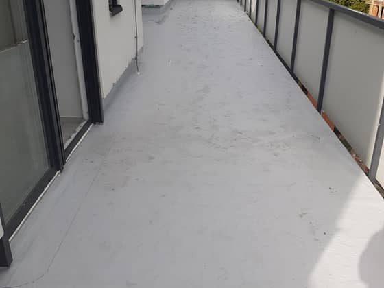
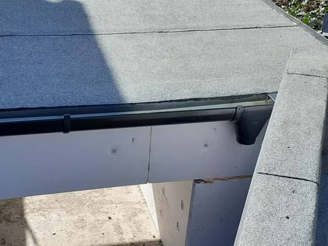
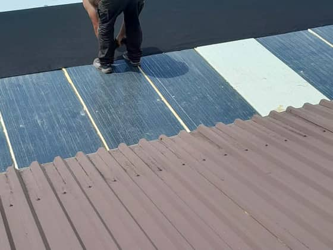
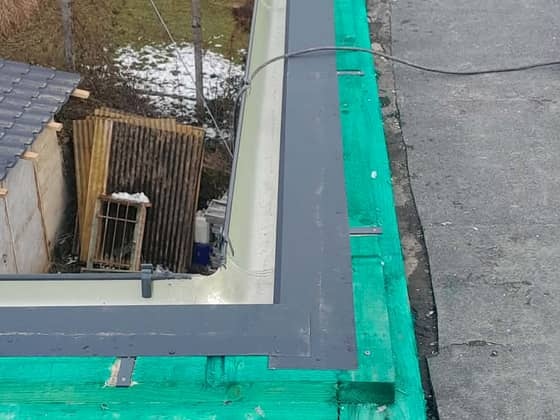
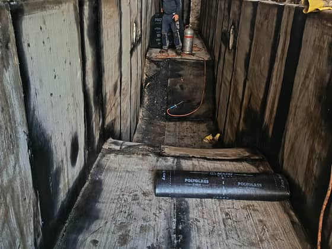

01 · Kurzor-követő lebegő előnézet
Nincsenek látható képek — csak kategórianevek listája. Ahogy az egér a sorok fölé ér, egy lebegő fotó követi a kurzort. Editorial/Awwwards-stílus, rendkívül letisztult, amíg nem mozdulsz.
Lapostető szigetelés 24 munka
Bádogozás & szegélyezés 10 munka
Erkély & terasz 3 munka
Ipari fémlemez tetőfedés 1 munka
02 · Húzható végtelen fal
Nem kattintós nyilak — magát a falat húzod, mint egy fizikai tárlófalat. Nagy, filmszerű képek, momentum-mozgással. Kattintás és fogd-vidd egyszerre él rajta.








Húzd oldalra ↔
03 · Görgetés-vezérelt zoom
Görgess lefelé ezen a szakaszon: a kép a helyén marad, miközben apró bélyegből teljes szélességű, filmszerű fotóvá nő. Erős, "kinyíló" hatás, amit ma sok prémium ügynökségi oldal használ.
Lapostető szigetelés — társasház, Miskolc
04 · Reflektor duoton-maszk
Alapból minden kép szürkés-visszafogott — a kurzor egy kör alakú "reflektort" húz maga után, ami alatt előbukkan a valódi, teljes színű fotó. Vidd az egeret a rács fölé.
05 · Kép-kitöltésű óriás tipográfia
A kategórianevek maguk óriási betűkként jelennek meg, a betűk belseje a saját munkafotóval van kitöltve — a tipográfia és a kép egy elemmé olvad össze. Kattints egy szóra a görgetéshez.
Lapostető
24 munka
Bádogozás
10 munka
Erkély
3 munka
Ipari
1 munka